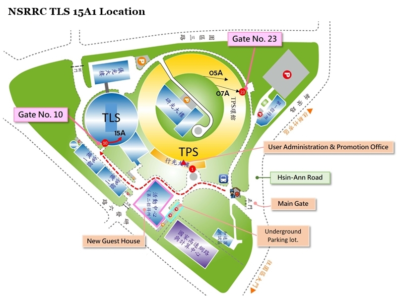

TLS 15A1 is a versatile synchrotron beamline designed to accommodate both academic and industrial users in 2013. This fully automated facility supports remote access, fostering international collaborations among research groups. TLS 15A1 offers a wide spectrum of applications, including high-throughput crystal screening, high-resolution data collection, de novo structure determination, and standard protein crystallography experiments. The energy range spans 7 keV to 15.5 keV (wavelengths 1.77 to 0.80 Å), with a flux of about 1.2×1011 photons/s at the sample position through a 200 × 200 μm2 aperture.
The beamline features a superconducting wiggler insertion device (In-Acromat, IASW6) as its light source, ensuring exceptional X-ray quality. X-rays are precisely collimated using a cylindrical collimating mirror and monochromated with a Si(111) double-crystal monochromator, followed by focused with a toroidal focusing mirror.
The end station is equipped with a cryo-cooler, a CCD X-ray detector (Rayonix MX300HE) and a micro-diffractometer (MD2). A high-speed air-bearing goniometer supports efficient crystal screening and phasing experiments, while an automatic sample changer (SAM system) enhances automation, enabling operation without human intervention. Remote access facilitates international collaborations in crystallography research.
- TLS 15A1 - Native Data Collection Methods_Chinese
- TLS 15A1 - MAD Data Collection Methods_Chinese
- Tutorial of Data Processing by HKL2000_Chinese
- Tutorial of Data Processing by HKL2000_English

TLS 15A1 is located within the TLS storage ring, and the nearest entrance is Gate No. 10. After entering through the NSRRC main gate, proceed along the main road for approximately 500 meters, and you will see Gate No. 10 on the right-hand side. Upon entering Gate No. 10, you will find TLS 17B beamline straight ahead. Please proceed to the right for about 20 meters to reach TLS 15A1.
